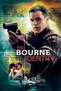
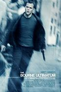

|  |
1.
The Bourne Identity
(2002)
1hr 59min | Action, Mystery, Thriller
 7.9/10
 68
Official Trailer
|
When a body is recovered at sea still alive, the mystery man (Damon) seems to have forgotten everything in life, including who he was. Eventually he begins to remember smaller details in life and soon finds out that his name was Jason Bourne. What he doesn't like is the gun and fake passports belonging to him. Now Bourne, and his new friend, Marie Helena Kreutz (Potente) travel from country to country in search of his new identity. But someone is not happy to see him alive, and is frantically trying to track him down. |
Matt Damon
Julia Stiles
Chris Cooper
|
Doug Liman
|
|
2.
The Bourne Supremacy
(2004)
1hr 48min | Action, Mystery, Thriller
7.7/10
73
Official Trailer
|
Two years ago, Jason Bourne thought he had walked away from his past. But now the past catches up to Jason Bourne when the CIA threatens to ruin his new life. Bourne and Marie have maintained their anonymous, underground existence at the cost of permanence. Fueled by splintered nightmares and haunted by the past he cannot remember, Bourne moves Marie from city to city, trying to remain one step ahead of the threat implicit in every unexplained stranger's glance, every "wrong number" phone call--that at any second, without any warning, he might get pulled back into the world he hopes he left behind. |
Matt Damon
Julia Stiles
Franka Potente
|
Paul Greengrass
|
|  |
3.
The Bourne Ultimatum
(2007)
1hr 55min | Action, Mystery, Thriller
8/10
85
Official Trailer
|
Bourne is once again brought out of hiding, this time inadvertently by London-based reporter Simon Ross who is trying to unveil Operation Blackbriar--an upgrade to Project Treadstone--in a series of newspaper columns. Bourne sets up a meeting with Ross and realizes instantly they're being scanned. Information from the reporter stirs a new set of memories, and Bourne must finally, ultimately, uncover his dark past whilst dodging The Company's best efforts in trying to eradicate him. |
Matt Damon
Julia Stiles
David Strathairn
|
Paul Greengrass
|
|
4.
The Bourne Legacy
(2012)
2hr 15min | Action, Adventure, Thriller
6.7/10
61
Official Trailer
|
Six weeks after Jason Bourne's escape from Moscow, Aaron Cross (Jeremy Renner), an operative belonging to a Defense Department black ops program called Operation Outcome, is assigned to Alaska for a training exercise. He is forced to survive weather extremes and traverse rugged terrain to arrive at a remote cabin as punishment for missing training and going off the grid for four days. The cabin is operated by an exiled Outcome operative, Number Three (Oscar Isaac), who informs Aaron that he has broken the mission record by two days. As an Outcome operative, Aaron uses experimental pills known as "chems" (chemicals) which enhance the physical and mental abilities of their users. |
Jeremy Renner
Rachel Weisz
Edward Norton
|
Tony Gilroy
|
|
5.
Jason Bourne
(2016)
2hr 3min | Action, Thriller
6.6/10
58
Official Trailer
|
Jason Bourne is again being hunted by the CIA. It begins when Nicky Parsons a former CIA operative who helped Bourne, who went under and now works with a man who's a whistle blower and is out to expose the CIA's black ops. Nicky hacks into the CIA and downloads everything on all their Black Ops, including Treadstone which Bourne was a part of. And Heather Lee, a CIA agent, discovers the hack and brings it to the attention of CIA Director Dewey, the man behind the Black Ops. He orders Parsons be found and, hopefully, Bourne, too. |
Matt Damon
Julia Stiles
Tommy Lee Jones
|
Paul Greengrass
|